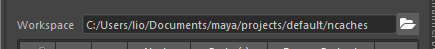
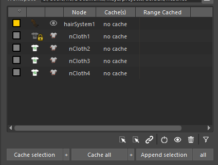
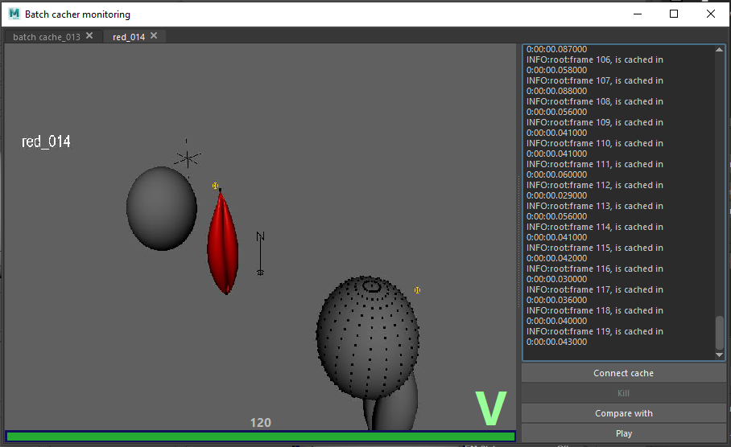
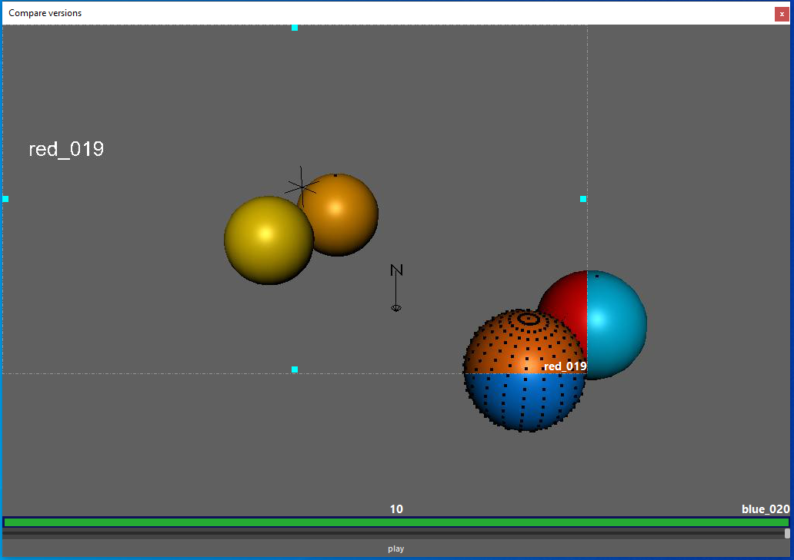

nCache factory help
Table of Content
- Introduction
- Let's start with nCache Factory
- Set your workspace
- Dynamic node table
- Toolbar
- Cache buttons
- Available versions (panel)
- Cache infos
- Attribute transfer window
- Dynamic maps transfer window
- Batch cacher (panel)
- Multi scenes
- Attribute wedging
- Auto-kill simulation options
- Options (panel)
- Comparison (panel)
- Playblast (panel)
- Batch monitor
- Version comparator
- Contact sheet
1.
Introduction
The nCache Factory is an open source toolkit for Autodesk Maya dedicated
to manage nucleus caches versioning. His has for goal to improve productivity, quality
artists comfort during CGI productions.
2. Let's start with
nCache Factory
To install the nCache factory, refere to the readme on the github tool home page.
3. Set your
workspace

The workspace is the folder where will be stored all your different files, settings and versions.
The workspace directory tip folder is always named "ncaches". When a workspace is set, this folder is created if it doesn't exists.
With the factory initialization, a default workspace is automatically set under the current scene folder.
If the scene isn't saved yet, the default workspace will be set into the ~home folder. Important: this field is updated automatically
during your session. When a scene is opened and you can't find your versions previously done, do not forget to check the workspace set is the
one used for cacheing.
By security, the factory doesn't provide any button to delete physically a version.
If you open the workspace directory in any file explorer, you can manually deleted the content to clean the files.
N.B. the workspace define the context for the whole ui and panels.
4. Dynamic nodes table

This table list all the cacheable dynamic nodes: "hair system" and "ncloth".
Every rows are split in six columns.
Important: In the nCache Factory, everything related to "selection" means
the items selected in this table. The tool never take care about the maya interactive selection.
- Color: This item display the color of the node in the viewport.
For the ncloth, that's the shader color assigned on the visible geometry (input or output mesh).
For the hair systems, that displays the solver's collision hull.
This column is clickable. That open a color selector dialog which make you
will be able to change the node color. N.B. That same nCloth may have two different
colors depends if the input mesh is visible or the output mesh one.
- State(*): This item displays the node type icon.
This column is interactive. A click switch the state. When the icon is drawn in shades of grey, the node is disabled.
- Display(*): This item manage the node display state. That
behave differently depending the node type. For ncloth, the icons are the standard icons for
"display current mesh" and "display input mesh". This column is interactive. That switches between current and
input mesh. For hair systems, the icon is an eye. That enables/disables the collision hull display.
- Node: This field displays the dynamic node name with namespace stripped.
- Cache(s): This field displays the cache(s) verion(s) name(s) connected to the
dynamic nodes. Multiple caches can be connected by a cacheBlend node. If no cache are connected,
the field display: "no cache". When the field displays "out of workspace", that means that the connected cache
is not located into the current workspace.
- Range: This field represents the current timeline with a graphic
representation of the cached frames.
|
|
Enable/disable nCloth |
|
|
Display current/input mesh |
|
|
Switch nHair simulation method (all follicles, static) |
|
|
Display collision solver on/off |
* Those interactive fields may contain a locker icon (). That means they can't be edited from
the table. The attributes affected by the switch are locked or connected.
4.1Toolbar
|
|
Match ncache factory selection to maya viewport. |
|
|
Select in maya viewport the cacheFile or cacheBlend attached to
ncache factory selection. |
|
|
Link the ncache factory selection to the maya viewport. |
|
|
Switch the dynamic nodes selected simulation states. |
|
|
Switch the dynamic nodes selected visibility states. |
|
|
Remove the cache connected to the ncache factory selection. This remove
the cacheFile and cacheBlend nodes. That does't phisically remove the version files from the disk. |
|
|
Filter the dynamic nodes visible in for the factory. |
4.2 Cache
buttons
This collection of buttons create ncaches versioning using maya live.
All those buttons use the options set in panels below.
- Cache selection. Cache the selected dynamic nodes replacing the current connected
version. The version will automatically incremented if:
- The selected node aren't connected to the same version.
- No cache are connected to the selected nodes.
- Blend cache are connected to the selected nodes.
- Cache selection +: Cache the selected dynamic nodes and increment version.
- Cache all: same as "Cache selection" but cache all the enabled nodes.
- Cache all +: same as "Cache selection +" but cache all the enabled nodes
- Append selection: Append the selected cache using the timeline. warning: This
one doesn't use the custom time range.
- all : same as "Append selection" but cache all the enabled nodes
5. Available Versions (panel)
This panel helps to explore and manage the versions available in the workspace set.
The listed versions are automatically filtered, that displays only the versions which contain the selected nodes. The filtering
is based on the node names. If a nodes is renammed after caching, the tool will not be able find a match the available versions.
Important: the namespaces aren't used to do the match. If the cache is done with a different namespace, that should work.
That allow user to cache in scene and reconnect it in an other scene which contains the rig in reference. This also create a limit,
if the scene contain multiple nodes with the same name but differents namespace, that won't work. Example: multiple instances of
one asset.
5.1 Cache infos
- Connect cache: Connect the current version to the selected
dynamic nodes
- Blend cache: Blend the current version to the caches
connected to the selected dynamic nodes
- Plug as input shape: Import the cache as geo cache and use
this new geometry as new input.
- Plug as rest shape: Import the cache as geo cache and use
this new geometry as rest shape.
- Recover original input: If the button "Plug as input
shape" has been used, this button is usefull to cancel the operation. That reconnect the shape
which was originally connected into the input.
- Transfer settings: Open the "Attribute transfer window".
- Transfer dynamic maps: Open the "Dynamic map transfer window".
- Show playblasts: Open the recorded playblasts under the cache version with the media player set (see path
options).
5.2 Attribute transfer window
Natively, maya export a xml file recording all the plugs values which
influence the recorded simulation. This tool parse those settings and provide a UI to gather them.
- Apply all settings: Transfer (or blend) all settings
visibles from the tool to the scene.
- Apply all settings on selected nodes: Transfer (or blend)
all settings on all selected nodes in the left node list.
- Apply selected settings: Transfer (or blend) all the
selected settings from the attributes table to the scene.
- Blend with scene (slider): This slider allow to blend the
cached settings with the current scene settings. If the slider value is at laxilul possible
(which is by default), the tool apply at 100% the cached values.
5.3 Dynamic maps transfer window
For every cache version created, the dynamic maps are backed up. This
tool allow to transfer the backed up map to the current scene.
- Apply all maps: Transfer all maps contained by the tool
- Apply all maps on selection: Transfer all maps on the
selected nodes in the left list.
- Apply selected maps: Transfer only selected maps on
selected nodes.
6. Batch cacher
(panel)
This panel provide a toolkit to create ncache version in background using
an external mayapy. This allow to launch multiple caches in concurrency. There's two systems to launch
batch cache, the multi scenes and the attribute
wedging. All the caches are sent through the Batch cacher moniter.
N.B. Every cache sent through the Batch cacher
monitor will render a real-time feedback. The render done will the settings from
the Playblast options panel.
Important: the numbers of ncache
processed in concurency is unlitited. Depending of your available memory, your scene size and you
number of available core, do not exagerate :).
6.1 Multi
scenes
The multi scenes give the possibilty to store your current scene to cache it later.
You can cook multiple scene and send them together.
|
|
This button create a save of your scene in
the current state. All the edits you will do after won't be used for when you will send
the caches. |
|
|
This button will remove all the selected scenes
backed up for batch cache. |
6.2 Attribute
wedging
The attribute wedging concept allow to send multiple caches an
unique scene with one overrided attribute value.
- Name: This field is the name of the cached version. The comment is automatically
generated with the attribute override value.
- Attribute: This field has to contains the full plug name which will be overrided. e.i.
nClothShape1.thickness
|
|
This button gather the attribute higlighted in the channel box. |
|
|
This button open a dialog which help to find an attribute in the current maya
selection.
|
- Values: that's a value list. The format must be floats separated by comas: 0.5, 1,
2, 3.0. The number of values is unlimited.
|
|
This button open a dialog helper to create
automatically a list of values. |
6.3 Auto-kill
simulation options
This part provide options to kill automatically your cache if that's
detect an issue. Two options are available to auto kill a simulation.
- Stretch limit: The cache will evaluate the input and output geometry after every
frame simulated. That will compare the edge lengths on both geometries. If the output geo edge
length is longer than the input geometry one multiplicated by the factor given, the cache
process is killed.
Time limit: The calculation time is evaluated between everyframe, if the is higher than the
limit given in seconds, the cache process is killed.
7. Options
(panel)
This panel contains options use for ncache
- Verbose: Activate a special verbose. That log time spent
between every frame. That interesting for os which has the maya ui frozen during the cache but
use a external terminal as console. That help the user to see where is the caching process.
- Range: selected the cached range (current time line or a
custom one).
- Attach method: This is how maya will behave to manage the
cache nodes already in the scene. Originally, maya is a bit dum with this. If nothing in the
scene maya cache the node, but if there's a connected cache, maya ask every time if you want to
blend or erase the cache file. If a cache is already connected, maya become dum and is not able
to create one file per node anymore. That make the manual reconnection almost impossible. For
those reason, the ncache factory clear all the cache nodes before every cache. The attach method
define how the cleared caches will be reconnected after the process. Two kind of cache nodes can
be connected to the dynamic nodes. The cache file is a node which read a ncache file saved in
disk. His output can be directly connected in the dynmic node. The second one is the blend
cache. Multiple cache files can be connected in the cache blend inputs. The cache blend will act
as a blend shape for the caches.
- default: remove all cache file and cache blend
connected to dynamic nodes. Those nodes are deleted and replaced by a new cache file
using the new ncache version.
- keep blend: keep all blend nodes already connected
to the dynamic nodes. The new cache files will be added to the cache blend inputs. The
dynamic nodes who have a cache file connected will be clear like in the default method.
- keep all: this method act like the "keep blend"
for the dynamic nodes with a blend node connected. That will create automatically a
blend node if a cache file is connected.
8. Comparison
(panel)
This panel is an interactive comparison between the settings
applied in the maya scene for a dynamic node and the setting used for the cache connected to it. The
list display only the differences.
- Revert selected: set back selected attributes value used
in the connected cache.
- Revert all: set back all attributes value used in the connected cache.
9. Playblast
(panel)
During all cache done by the manager, a playblast can be done in
concurency. This avoid to parse a second time the time line after the cache. This panel manage the
playblast option's.
Warning: to do the playblast, the factory render everyframe
using the hardware render engine which encounter issues to render nurbs curves. Then even if the
nurbs display option is checked, it may not rendered.
10. Batch cache
monitor
Menu >> Misc >> Batch cache monitor

This window display all the cache currently sent in batch mode during
the maya session. Every tab has the version name has label. On the left of the window, the render
done are updated in real time. The "no image" status means that the no frame are cached yet.
Two statuses icons can appear on the render:
|
|
The cache is succesfully done. |
|
|
The cache has been killed by user. |
N.B. If the cache is stop by external way: crash, terminal closed,
etc... the factory can't catch the event and won't display any special status icon.
On the window left, the mayapy log is available. This log is updated in
real time an receive the status of the current cache in progress.
- Connect cache: Connect the current version. If the cache
is connected during the process, maya will interactively update the cache file when a frame is
added to the cache.
- Kill: Kill the background process and stop caching.
- Compare with: Open a dialog to select an other cache in
progress. This open the version comparator.
- Play/Stop: Play/stop the renders animation in 24 f/s.
11. Version
comparator

This window is a media player which read concurrency two jpeg sequences.
The two versions can be compared with wipes and transparency comparison.
12. Contact Sheet
|